Le Studio
Montrez ce qui compte.
Flèches, cadres, surlignage, étiquettes, étapes numérotées et flou. Rognez, puis exportez en PNG, JPG ou PDF.
Une extension Chrome · Gratuite pour commencer
Capturez n’importe quelle page Web de haut en bas, en un clic. Fenêtres surgissantes, bandeaux de témoins et publicités restent hors de l’image, et le résultat sort encadré, prêt pour votre présentation, votre publication ou votre client.
Bientôt sur le Chrome Web Store
Avant et après
Une capture ordinaire attrape la fenêtre surgissante, le bandeau de témoins et les publicités, et seulement ce qui tient à l’écran. Vitrine laisse le fouillis de côté et garde toute la page.
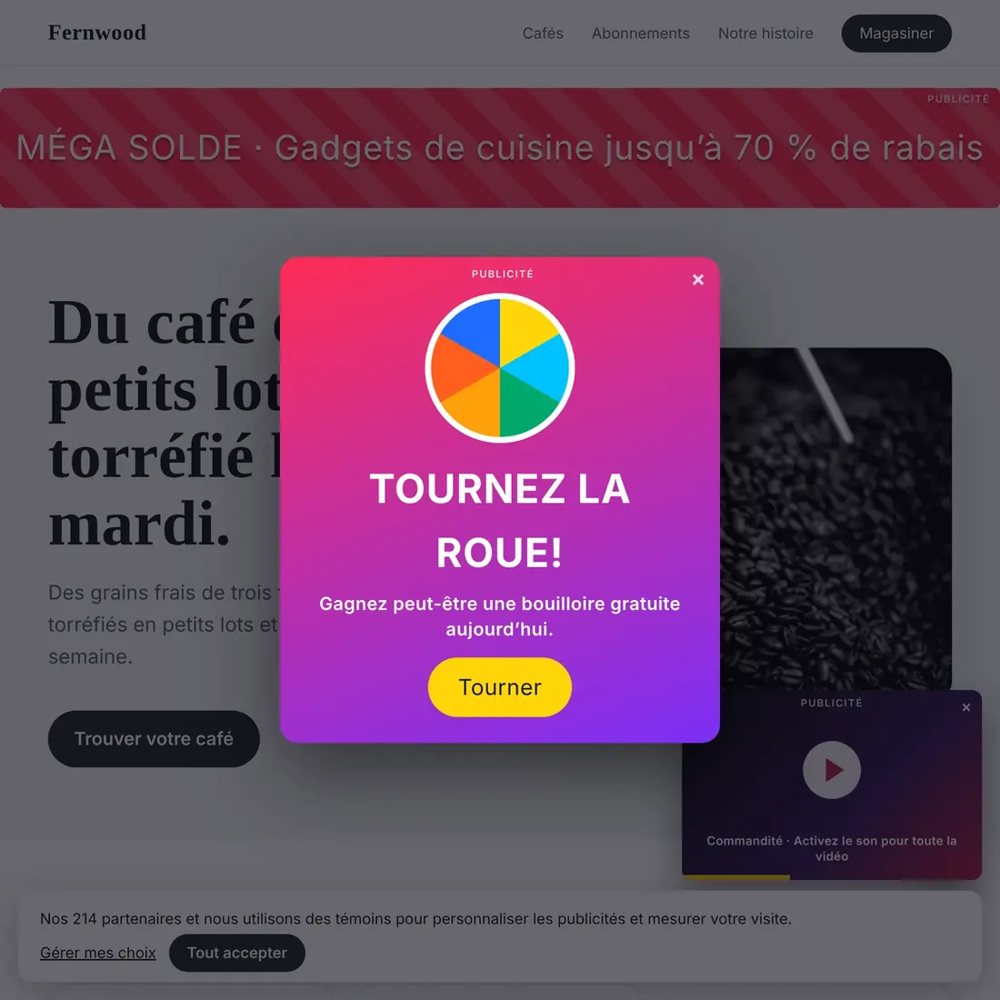
Bannière publicitaireFenêtre surgissantePublicité vidéoBandeau de témoins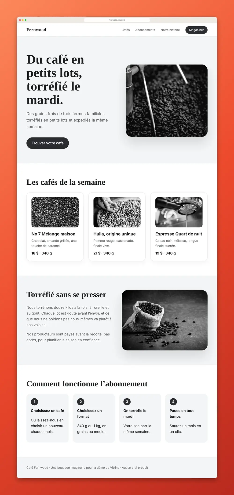
Toute la page, encadrée sur l’arrière-plan Vermillon. Rien n’est bloqué sur la page elle-même.
Comment ça marche
Windows : Alt + Maj + S
Ou cliquez sur l’icône de Vitrine. Quatre raccourcis couvrent la page entière, la zone visible, une zone et un élément.
Elle fait défiler la page pour vous, charge les images différées, n’affiche les en-têtes fixes qu’une fois et laisse de côté fenêtres surgissantes et publicités.
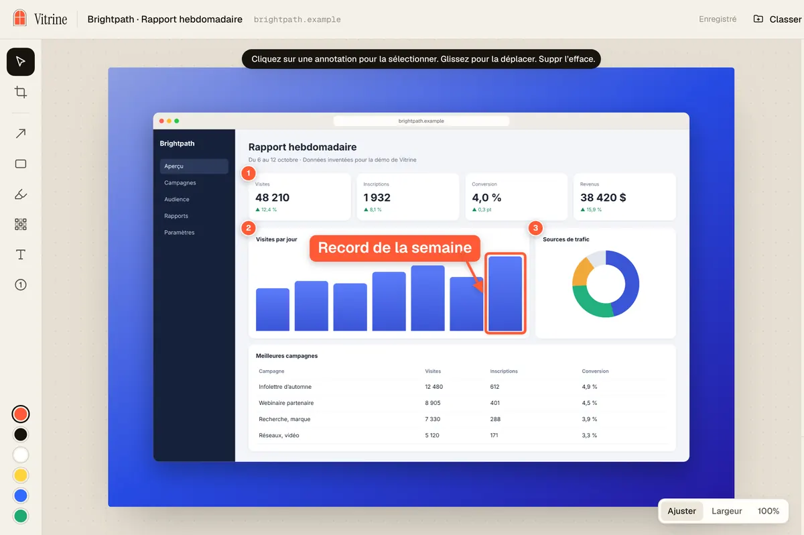
Le Studio s’ouvre avec votre cadre déjà appliqué. Copiez, exportez, ou transformez la capture en vidéo.
Vidéos et carrousels
Transformez une longue capture en vidéo qui défile ou en carrousel, aux formats des diapos, des publications et des Stories. Faite sur votre ordinateur, dans votre cadre.
Du vrai Vitrine, sur des pages inventées. Les vidéos et carrousels gratuits portent une petite mention « Fait avec Vitrine ». Pro la retire.
Et tout le reste
Le Studio
Flèches, cadres, surlignage, étiquettes, étapes numérotées et flou. Rognez, puis exportez en PNG, JPG ou PDF.
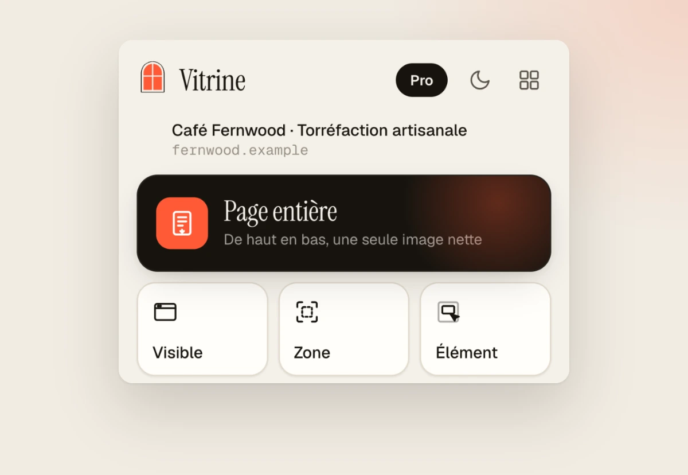
Quatre façons de capturer
Windows : Alt + Maj + S
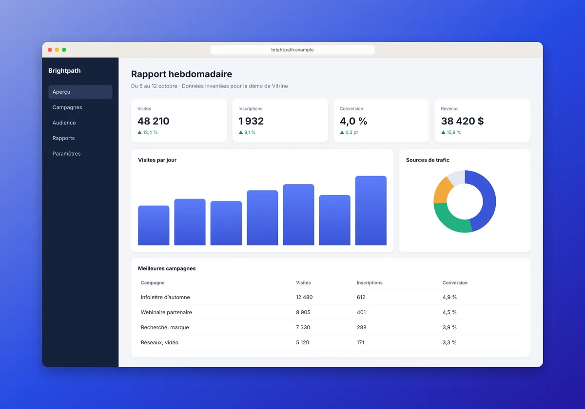
Couleurs de marque · Pro
Un arrière-plan créé à partir des couleurs du site, automatiquement.
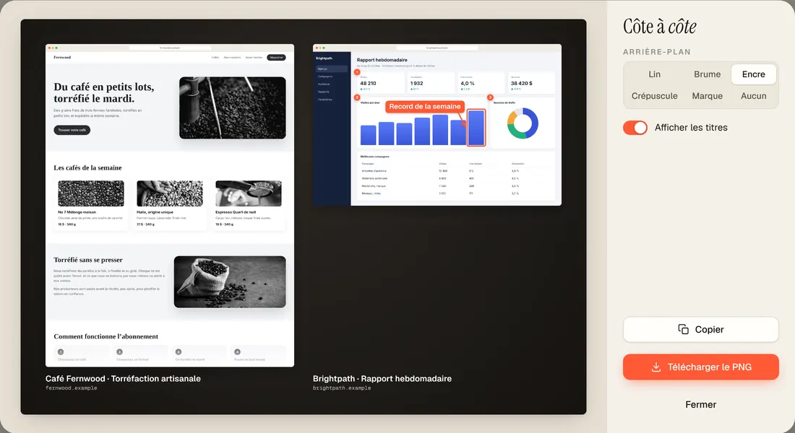
Côte à côte
Réunissez 2 à 4 captures : pages de prix, avant et après, tests A/B.
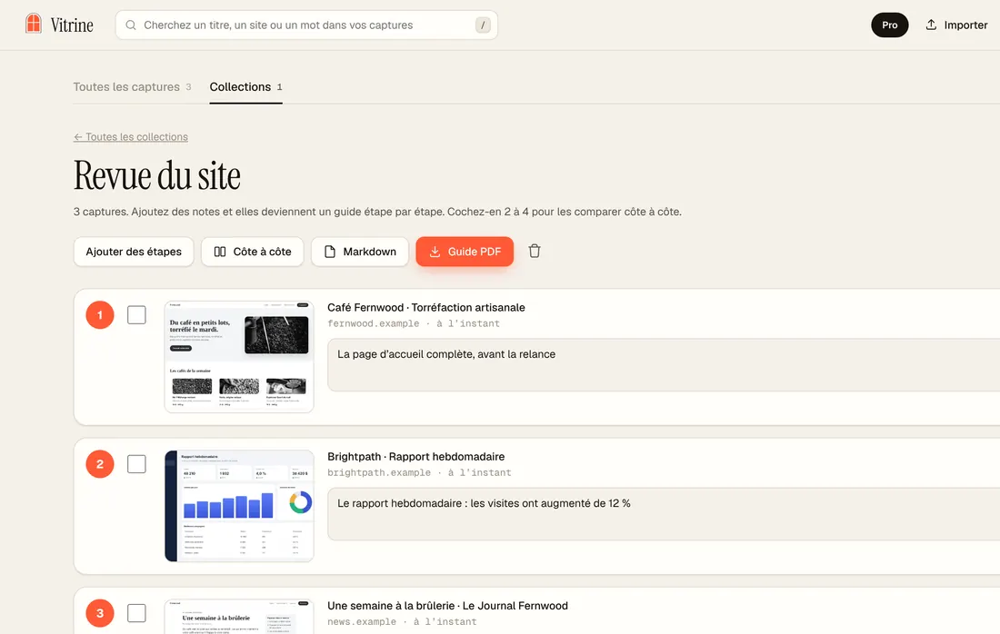
Guides pas à pas
Ajoutez une note à chacune, puis exportez un PDF soigné ou du Markdown.
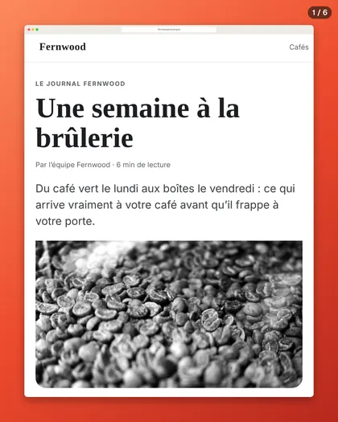
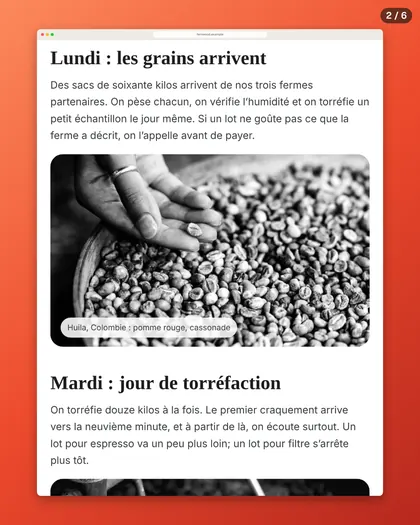
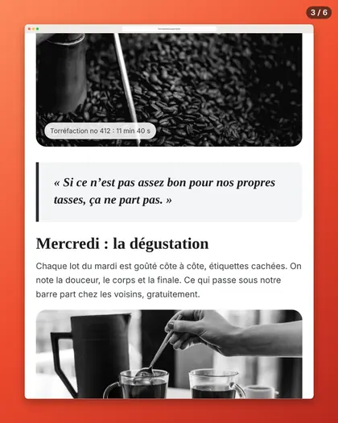
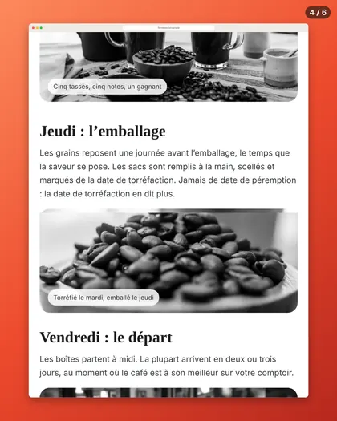
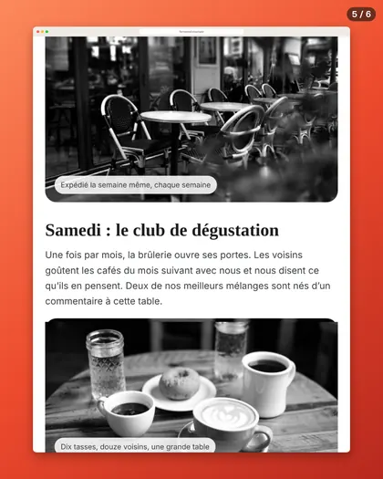
Carrousels
Des diapositives 4:5 numérotées, chacune coupée entre deux blocs de texte. Un PDF pour LinkedIn, des PNG pour Instagram.
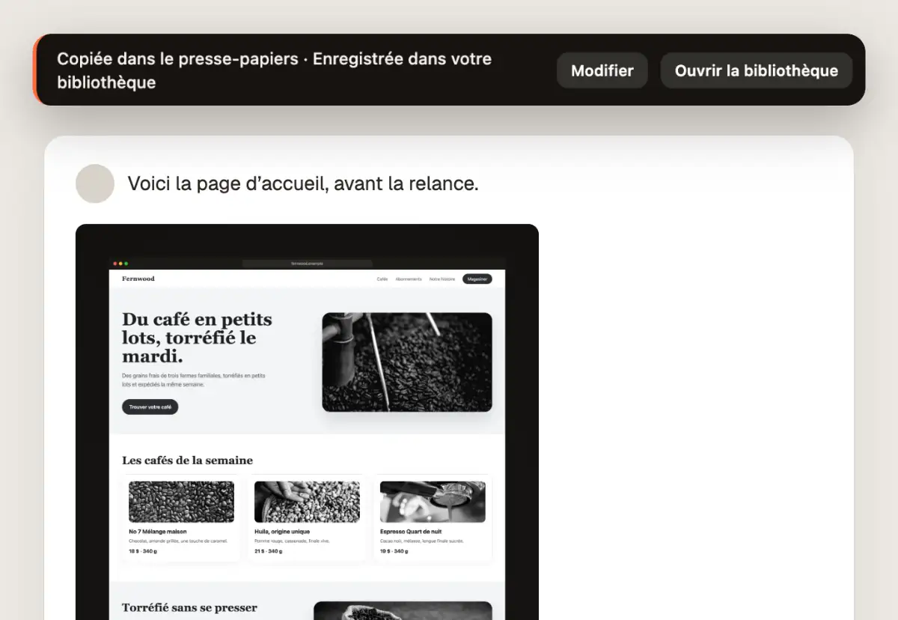
Copie instantanée
Réglez-la une fois et chaque capture est copiée, déjà mise en forme. Collez-la dans Slack, un courriel ou Notion.
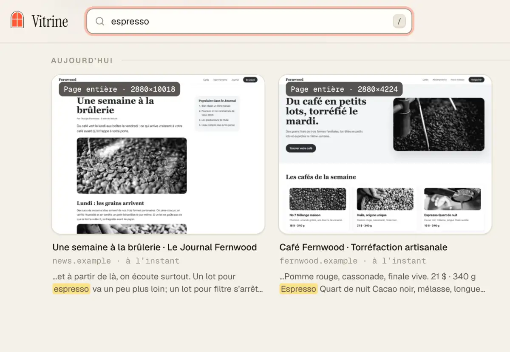
Votre bibliothèque
Cherchez par les mots qui étaient sur la page. Des collections pour vos clients et vos projets. Sauvegardez tout dans un seul fichier .zip.
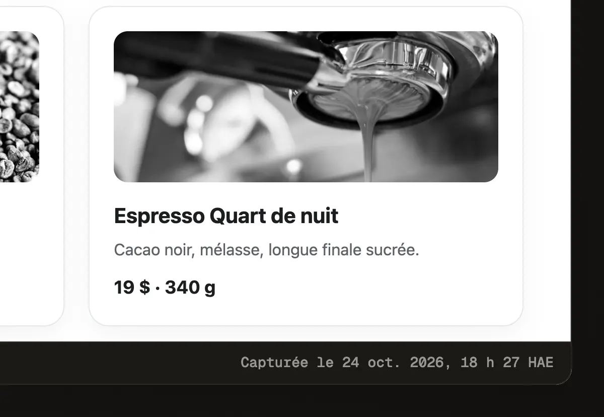
Tampon de preuve · Pro
Le lien source et la date de capture, juste sous l’image.
En action
La démo montre tout : le raccourci, le résultat encadré, puis la vidéo.
Privé par conception
Prix
0 $ pour de bon
Prix de lancement
19 $ US une fois
Prix de lancement jusqu’au 30 novembre 2026, puis 24 $ US.
Vous recevez une clé de licence à coller dans Vitrine. Aucun compte. Les nouveaux utilisateurs ont aussi un essai Pro de 7 jours, sans carte.
Questions
Non. Ni pour la version gratuite, ni pour Pro. Pro, c’est une clé de licence que vous collez une fois, et elle fonctionne hors ligne.
Oui. Les quatre modes de capture, les annotations, la copie instantanée et l’exportation sont gratuits pour de bon. Tout ce qui est gratuit aujourd’hui le reste dans chaque mise à jour 1.x.
Vitrine fait défiler toute la page pour vous, n’affiche les en-têtes fixes qu’une fois et garde les très longues pages nettes, même les pages qui défilent dans un cadre, comme les boîtes de réception et les tableaux de bord. Appuyez sur Échap sur une très longue page pour arrêter et garder ce qui est capturé.
Dans une bibliothèque privée, dans votre navigateur, sur votre ordinateur. Sauvegardez le tout dans un seul fichier .zip quand vous voulez.
Rien, sauf une vérification unique de la licence quand vous activez Pro.
Google Chrome sur votre ordinateur.
Oui. Vitrine parle français et anglais, et suit la langue de votre Chrome.
Écrivez-nous dans les 14 jours suivant votre achat et nous vous rembourserons en entier.
Écrivez à support@metadatamarketer.com. Une vraie personne vous répond en 3 jours ouvrables.
Bientôt sur le Chrome Web Store
Gratuit pour commencer. Un seul paiement pour Pro. Aucun compte.